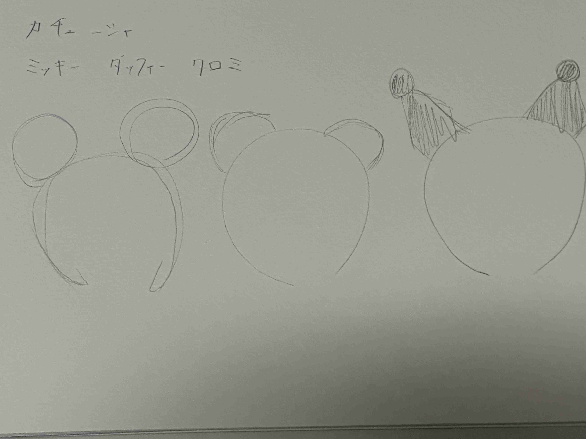
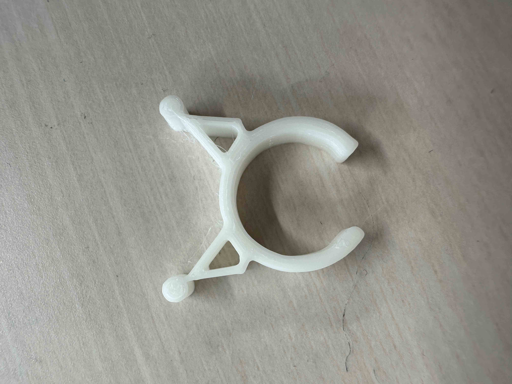
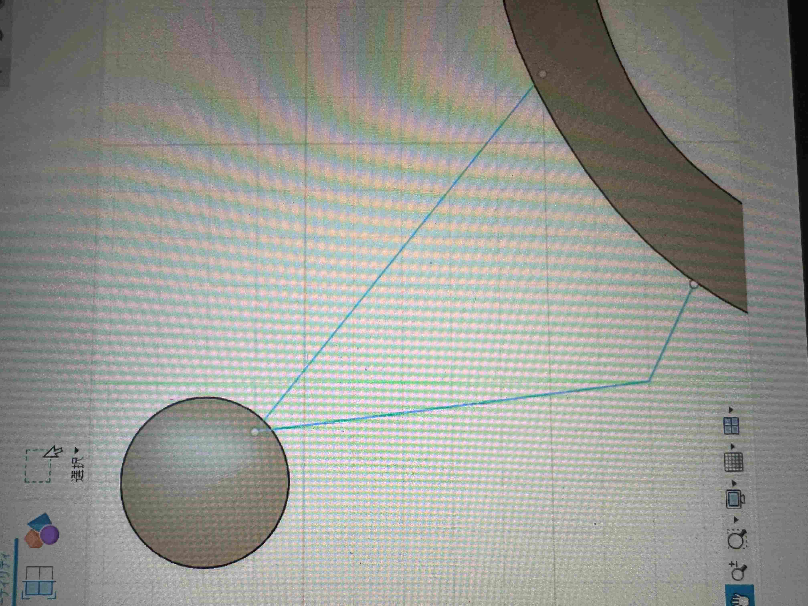
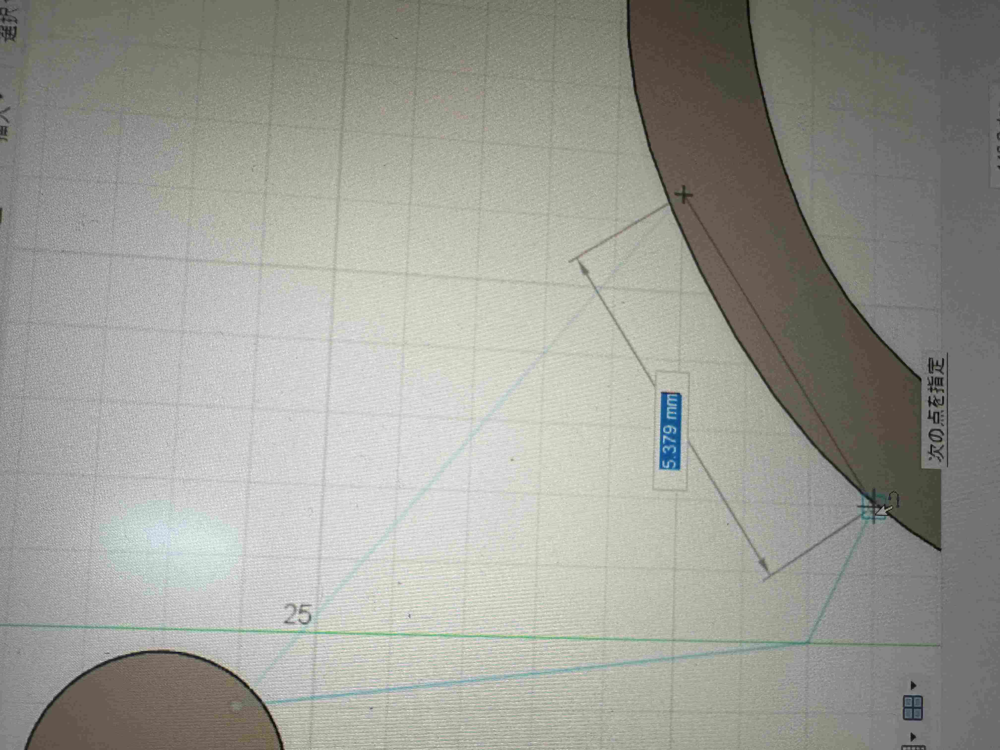

2,スケッチ

3,実際にできたもの

4,設計ファイル
stlファイル
5,作品の説明
サンリオのクロミちゃんの耳のピンセットです。
ミニカチューシャみたいでかわいいのでコレクションとして飾るのもおすすめです。
6,なぜこの作品を作ろうと思ったか
カチューシャがピンセットの形に似ていると思ったことから発想を得ました。
Disneyが好きなのでミッキーかダッフィーにしようと思いましたが、サンリオのクロミちゃんがよりわかりやすく印象的であると感じたためクロミちゃんにしました。
キャラの耳を変えることによって色々な種類を出すこともできます。
7,制作プロセスの中で調べたこと
スケッチで線分を引いた部分がどうしても押し出すことができないハプニングが起こりました

このサイトを参考にし線分が完全につながっていないことに気が付き下の写真のようにもう一本引くことで解決できました
